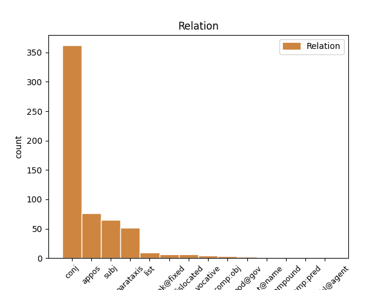
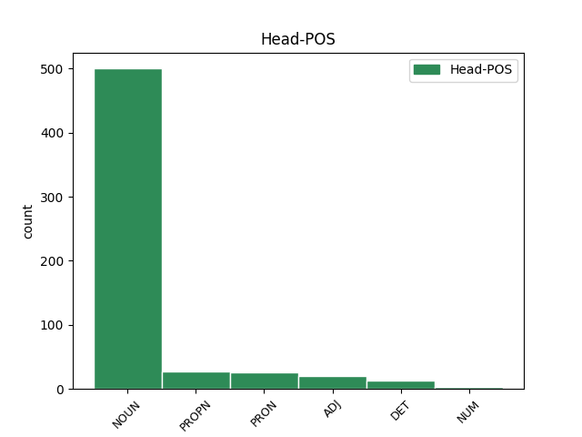
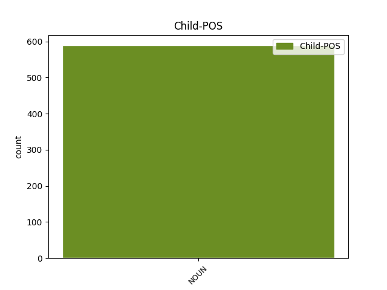

Distribution of features within this leaf



Agreement Rules sorted by frequency.
- When the dependent token is the conjunct(conj) of the head token, and the head token is NOUN and the dependent token is NOUN.
1 Перед _ _ _ _ 0 _ _ _
2 сеансом _ _ _ _ 0 _ _ _
3 на _ _ _ _ 0 _ _ _
4 Гороховой _ _ _ _ 0 _ _ _
5 присели _ _ _ _ 0 _ _ _
6 у _ _ _ _ 0 _ _ _
7 раскрытого _ _ _ _ 0 _ _ _
8 окна _ _ _ _ 0 _ _ _
9 в _ _ _ _ 0 _ _ _
10 кофейном _ _ _ _ 0 _ _ _
11 кафе _ _ _ _ 0 _ _ _
12 , _ _ _ _ 0 _ _ _
13 заказали _ _ _ _ 0 _ _ _
14 фалафель фалафля NOUN _ Animacy=Inan|Case=Acc|Gender=Masc|Number=Sing 0 _ _ _
15 и _ _ _ _ 0 _ _ _
16 донер донер NOUN _ Animacy=Inan|Case=Acc|Gender=Masc|Number=Sing 14 conj _ SpaceAfter=No
17 , _ _ _ _ 0 _ _ _
18 стали _ _ _ _ 0 _ _ _
19 обсуждать _ _ _ _ 0 _ _ _
20 пиво _ _ _ _ 0 _ _ _
21 . _ _ _ _ 0 _ _ _
1 Еще _ _ _ _ 0 _ _ _
2 любопытнее _ _ _ _ 0 _ _ _
3 , _ _ _ _ 0 _ _ _
4 что _ _ _ _ 0 _ _ _
5 в _ _ _ _ 0 _ _ _
6 караоке караоке NOUN _ Animacy=Inan|Case=Loc|Gender=Masc|Number=Sing 0 _ _ _
7 - _ _ _ _ 0 _ _ _
8 баре бар NOUN _ Animacy=Inan|Case=Loc|Gender=Masc|Number=Sing 6 appos _ _
9 стояли _ _ _ _ 0 _ _ _
10 столы _ _ _ _ 0 _ _ _
11 с _ _ _ _ 0 _ _ _
12 девочками _ _ _ _ 0 _ _ _
13 и _ _ _ _ 0 _ _ _
14 столы _ _ _ _ 0 _ _ _
15 с _ _ _ _ 0 _ _ _
16 мужиками _ _ _ _ 0 _ _ _
17 . _ _ _ _ 0 _ _ _
1 Но _ _ _ _ 0 _ _ _
2 самый _ _ _ _ 0 _ _ _
3 яркий _ _ _ _ 0 _ _ _
4 момент момент NOUN _ Animacy=Inan|Case=Nom|Gender=Masc|Number=Sing 6 subj _ _
5 - _ _ _ _ 0 _ _ _
6 ужин ужин NOUN _ Animacy=Inan|Case=Nom|Gender=Masc|Number=Sing 0 _ _ _
7 в _ _ _ _ 0 _ _ _
8 стейк-хаусе _ _ _ _ 0 _ _ _
9 . _ _ _ _ 0 _ _ _
1 В _ _ _ _ 0 _ _ _
2 это _ _ _ _ 0 _ _ _
3 мгновенье _ _ _ _ 0 _ _ _
4 ты _ _ _ _ 0 _ _ _
5 сам _ _ _ _ 0 _ _ _
6 -- _ _ _ _ 0 _ _ _
7 Луч луч NOUN PROPN Animacy=Anim|Case=Nom|Gender=Masc|Number=Sing 0 _ _ _
8 Овеществленный _ _ _ _ 0 _ _ _
9 его _ _ _ _ 0 _ _ _
10 , _ _ _ _ 0 _ _ _
11 К _ _ _ _ 0 _ _ _
12 жизнетворящим _ _ _ _ 0 _ _ _
13 мирам _ _ _ _ 0 _ _ _
14 Ключ _ _ _ _ 0 _ _ _
15 , _ _ _ _ 0 _ _ _
16 Вестник _ _ _ _ 0 _ _ _
17 , _ _ _ _ 0 _ _ _
18 творец _ _ _ _ 0 _ _ _
19 , _ _ _ _ 0 _ _ _
20 божество _ _ _ _ 0 _ _ _
21 ; _ _ _ _ 0 _ _ _
22 В _ _ _ _ 0 _ _ _
23 это _ _ _ _ 0 _ _ _
24 мгновенье _ _ _ _ 0 _ _ _
25 она _ _ _ _ 0 _ _ _
26 -- _ _ _ _ 0 _ _ _
27 Цель цель NOUN NOUN Animacy=Inan|Case=Nom|Gender=Fem|Number=Sing 7 parataxis _ SpaceAfter=No
28 , _ _ _ _ 0 _ _ _
29 Тайна _ _ _ _ 0 _ _ _
30 , _ _ _ _ 0 _ _ _
31 богиня _ _ _ _ 0 _ _ _
32 , _ _ _ _ 0 _ _ _
33 земля _ _ _ _ 0 _ _ _
34 , _ _ _ _ 0 _ _ _
35 Вечно _ _ _ _ 0 _ _ _
36 живого _ _ _ _ 0 _ _ _
37 вина _ _ _ _ 0 _ _ _
38 Хмель _ _ _ _ 0 _ _ _
39 Пьющая _ _ _ _ 0 _ _ _
40 , _ _ _ _ 0 _ _ _
41 всё _ _ _ _ 0 _ _ _
42 утоля _ _ _ _ 0 _ _ _
43 . _ _ _ _ 0 _ _ _
1 В _ _ _ _ 0 _ _ _
2 понедельник _ _ _ _ 0 _ _ _
3 шли _ _ _ _ 0 _ _ _
4 из _ _ _ _ 0 _ _ _
5 кино _ _ _ _ 0 _ _ _
6 , _ _ _ _ 0 _ _ _
7 каждые _ _ _ _ 0 _ _ _
8 пять _ _ _ _ 0 _ _ _
9 минут _ _ _ _ 0 _ _ _
10 встречая _ _ _ _ 0 _ _ _
11 знакомых _ _ _ _ 0 _ _ _
12 ( _ _ _ _ 0 _ _ _
13 Питер Питер PROPN _ Animacy=Inan|Case=Nom|Gender=Masc|Number=Sing 0 _ _ _
14 , _ _ _ _ 0 _ _ _
15 лето лето NOUN _ Animacy=Inan|Case=Nom|Gender=Neut|Number=Sing 13 conj _ SpaceAfter=No
16 , _ _ _ _ 0 _ _ _
17 белые _ _ _ _ 0 _ _ _
18 ночи _ _ _ _ 0 _ _ _
19 , _ _ _ _ 0 _ _ _
20 ага _ _ _ _ 0 _ _ _
21 , _ _ _ _ 0 _ _ _
22 а _ _ _ _ 0 _ _ _
23 я _ _ _ _ 0 _ _ _
24 и _ _ _ _ 0 _ _ _
25 не _ _ _ _ 0 _ _ _
26 в _ _ _ _ 0 _ _ _
27 платье _ _ _ _ 0 _ _ _
28 , _ _ _ _ 0 _ _ _
29 и _ _ _ _ 0 _ _ _
30 не _ _ _ _ 0 _ _ _
31 нарумянена _ _ _ _ 0 _ _ _
32 ) _ _ _ _ 0 _ _ _
33 . _ _ _ _ 0 _ _ _
1 девочка _ _ _ _ 0 _ _ _
2 тоже _ _ _ _ 0 _ _ _
3 говорит _ _ _ _ 0 _ _ _
4 а _ _ _ _ 0 _ _ _
5 лен _ _ _ _ 0 _ _ _
6 -- _ _ _ _ 0 _ _ _
7 ты _ _ _ _ 0 _ _ _
8 дан _ _ _ _ 0 _ _ _
9 – _ _ _ _ 0 _ _ _
10 ты _ _ _ _ 0 _ _ _
11 бур _ _ _ _ 0 _ _ _
12 забор _ _ _ _ 0 _ _ _
13 лови _ _ _ _ 0 _ _ _
14 хоро _ _ _ _ 0 _ _ _
15 -- _ _ _ _ 0 _ _ _
16 ший _ _ _ _ 0 _ _ _
17 пе _ _ _ _ 0 _ _ _
18 -- _ _ _ _ 0 _ _ _
19 реход _ _ _ _ 0 _ _ _
20 твоя _ _ _ _ 0 _ _ _
21 колода _ _ _ _ 0 _ _ _
22 пе _ _ _ _ 0 _ _ _
23 -- _ _ _ _ 0 _ _ _
24 региб _ _ _ _ 0 _ _ _
25 а _ _ _ _ 0 _ _ _
26 па _ _ _ _ 0 _ _ _
27 -- _ _ _ _ 0 _ _ _
28 рахода _ _ _ _ 0 _ _ _
29 са сапог NOUN _ Animacy=Inan|Case=Nom|Gender=Masc|Number=Plur 0 _ _ _
30 -- _ _ _ _ 0 _ _ _
31 поги goeswith NOUN NOUN Animacy=Inan|Case=Nom|Gender=Masc|Number=Plur 29 list _ _
1 А _ _ _ _ 0 _ _ _
2 вы _ _ _ _ 0 _ _ _
3 , _ _ _ _ 0 _ _ _
4 о _ _ _ _ 0 _ _ _
5 гении _ _ _ _ 0 _ _ _
6 , _ _ _ _ 0 _ _ _
7 лишенные _ _ _ _ 0 _ _ _
8 приюта _ _ _ _ 0 _ _ _
9 , _ _ _ _ 0 _ _ _
10 Вы вы PRON PRON Case=Nom|Number=Plur|Person=2 0 _ _ _
11 , _ _ _ _ 0 _ _ _
12 Бейрон _ _ _ _ 0 _ _ _
13 , _ _ _ _ 0 _ _ _
14 Дант _ _ _ _ 0 _ _ _
15 и _ _ _ _ 0 _ _ _
16 Тасс _ _ _ _ 0 _ _ _
17 , _ _ _ _ 0 _ _ _
18 герои герой NOUN NOUN Animacy=Anim|Case=Nom|Gender=Masc|Number=Plur 10 appos _ _
19 без _ _ _ _ 0 _ _ _
20 войны _ _ _ _ 0 _ _ _
21 , _ _ _ _ 0 _ _ _
22 Для _ _ _ _ 0 _ _ _
23 вас _ _ _ _ 0 _ _ _
24 не _ _ _ _ 0 _ _ _
25 создана _ _ _ _ 0 _ _ _
26 в _ _ _ _ 0 _ _ _
27 теперешнем _ _ _ _ 0 _ _ _
28 минута _ _ _ _ 0 _ _ _
29 , _ _ _ _ 0 _ _ _
30 Но _ _ _ _ 0 _ _ _
31 веки _ _ _ _ 0 _ _ _
32 в _ _ _ _ 0 _ _ _
33 будущем _ _ _ _ 0 _ _ _
34 даны _ _ _ _ 0 _ _ _
35 . _ _ _ _ 0 _ _ _
1 Одни _ _ _ _ 0 _ _ _
2 у _ _ _ _ 0 _ _ _
3 них _ _ _ _ 0 _ _ _
4 члены _ _ _ _ 0 _ _ _
5 и _ _ _ _ 0 _ _ _
6 те тот DET DET Case=Nom|Number=Plur 0 _ _ _
7 же _ _ _ _ 0 _ _ _
8 черты черта NOUN NOUN Animacy=Inan|Case=Nom|Gender=Fem|Number=Plur 6 subj _ SpaceAfter=No
9 , _ _ _ _ 0 _ _ _
10 -- _ _ _ _ 0 _ _ _
11 И _ _ _ _ 0 _ _ _
12 смертию _ _ _ _ 0 _ _ _
13 -- _ _ _ _ 0 _ _ _
14 Духа _ _ _ _ 0 _ _ _
15 смутились _ _ _ _ 0 _ _ _
16 мечты _ _ _ _ 0 _ _ _
17 ! _ _ _ _ 0 _ _ _
1 Одни один ADJ ADJ Case=Nom|Degree=Pos|Number=Plur 0 _ _ _
2 у _ _ _ _ 0 _ _ _
3 них _ _ _ _ 0 _ _ _
4 члены член NOUN NOUN Animacy=Inan|Case=Nom|Gender=Masc|Number=Plur 1 subj _ _
5 и _ _ _ _ 0 _ _ _
6 те _ _ _ _ 0 _ _ _
7 же _ _ _ _ 0 _ _ _
8 черты _ _ _ _ 0 _ _ _
9 , _ _ _ _ 0 _ _ _
10 -- _ _ _ _ 0 _ _ _
11 И _ _ _ _ 0 _ _ _
12 смертию _ _ _ _ 0 _ _ _
13 -- _ _ _ _ 0 _ _ _
14 Духа _ _ _ _ 0 _ _ _
15 смутились _ _ _ _ 0 _ _ _
16 мечты _ _ _ _ 0 _ _ _
17 ! _ _ _ _ 0 _ _ _
1 У _ _ _ _ 0 _ _ _
2 Революции _ _ _ _ 0 _ _ _
3 в _ _ _ _ 0 _ _ _
4 глазах _ _ _ _ 0 _ _ _
5 читаю _ _ _ _ 0 _ _ _
6 синих _ _ _ _ 0 _ _ _
7 Необходимость _ _ _ _ 0 _ _ _
8 беспощадных _ _ _ _ 0 _ _ _
9 мер _ _ _ _ 0 _ _ _
10 СССР _ _ _ _ 0 _ _ _
11 [ _ _ _ _ 0 _ _ _
12 эсесесер _ _ _ _ 0 _ _ _
13 ] _ _ _ _ 0 _ _ _
14 СССР _ _ _ _ 0 _ _ _
15 [ _ _ _ _ 0 _ _ _
16 эсесесер _ _ _ _ 0 _ _ _
17 ] _ _ _ _ 0 _ _ _
18 СССР _ _ _ _ 0 _ _ _
19 [ _ _ _ _ 0 _ _ _
20 эсесесер _ _ _ _ 0 _ _ _
21 ] _ _ _ _ 0 _ _ _
22 СССР СССР PROPN NOUN Animacy=Inan|Case=Gen|Gender=Masc|Number=Sing 0 _ _ _
23 [ _ _ _ _ 0 _ _ _
24 эсесесер эсесесер NOUN NOUN Animacy=Inan|Case=Gen|Gender=Masc|Number=Sing 22 parataxis _ SpaceAfter=No
25 ] _ _ _ _ 0 _ _ _
26 . _ _ _ _ 0 _ _ _
1 Ведь _ _ _ _ 0 _ _ _
2 Цыганов _ _ _ _ 0 _ _ _
3 мне _ _ _ _ 0 _ _ _
4 так _ _ _ _ 0 _ _ _
5 нравится _ _ _ _ 0 _ _ _
6 , _ _ _ _ 0 _ _ _
7 он _ _ _ _ 0 _ _ _
8 мрачный _ _ _ _ 0 _ _ _
9 , _ _ _ _ 0 _ _ _
10 гипермногодетный гипермногодетный ADJ _ Case=Nom|Degree=Pos|Gender=Masc|Number=Sing 0 _ _ _
11 , _ _ _ _ 0 _ _ _
12 и _ _ _ _ 0 _ _ _
13 то _ _ _ _ 0 _ _ _
14 ли _ _ _ _ 0 _ _ _
15 подлец подлец NOUN _ Animacy=Anim|Case=Nom|Gender=Masc|Number=Sing 10 conj _ SpaceAfter=No
16 , _ _ _ _ 0 _ _ _
17 то _ _ _ _ 0 _ _ _
18 ли _ _ _ _ 0 _ _ _
19 просто _ _ _ _ 0 _ _ _
20 бабник _ _ _ _ 0 _ _ _
21 . _ _ _ _ 0 _ _ _
1 Традиционалист традиционалист NOUN NOUN Animacy=Anim|Case=Nom|Gender=Masc|Number=Sing 2 dislocated _ _
2 Он он PRON PRON Case=Nom|Gender=Masc|Number=Sing|Person=3 0 _ _ _
3 почитает _ _ _ _ 0 _ _ _
4 вас _ _ _ _ 0 _ _ _
5 Добрейшим _ _ _ _ 0 _ _ _
6 из _ _ _ _ 0 _ _ _
7 царей _ _ _ _ 0 _ _ _
1 Немедля _ _ _ _ 0 _ _ _
2 остановить _ _ _ _ 0 _ _ _
3 ! _ _ _ _ 0 _ _ _
4 – _ _ _ _ 0 _ _ _
5 вопиют _ _ _ _ 0 _ _ _
6 к _ _ _ _ 0 _ _ _
7 мировому _ _ _ _ 0 _ _ _
8 сообществу _ _ _ _ 0 _ _ _
9 наш _ _ _ _ 0 _ _ _
10 , _ _ _ _ 0 _ _ _
11 ой _ _ _ _ 0 _ _ _
12 не _ _ _ _ 0 _ _ _
13 могу _ _ _ _ 0 _ _ _
14 , _ _ _ _ 0 _ _ _
15 шас _ _ _ _ 0 _ _ _
16 заплачу _ _ _ _ 0 _ _ _
17 , _ _ _ _ 0 _ _ _
18 Лавруша _ _ _ _ 0 _ _ _
19 , _ _ _ _ 0 _ _ _
20 морда _ _ _ _ 0 _ _ _
21 которого _ _ _ _ 0 _ _ _
22 напоминает _ _ _ _ 0 _ _ _
23 мне _ _ _ _ 0 _ _ _
24 мою _ _ _ _ 0 _ _ _
25 жисть _ _ _ _ 0 _ _ _
26 , _ _ _ _ 0 _ _ _
27 и _ _ _ _ 0 _ _ _
28 нашего _ _ _ _ 0 _ _ _
29 второго второй ADJ _ Case=Gen|Degree=Pos|Gender=Masc|Number=Sing 0 _ _ _
30 – _ _ _ _ 0 _ _ _
31 американского _ _ _ _ 0 _ _ _
32 ковбоя ковбой NOUN _ Animacy=Anim|Case=Gen|Gender=Masc|Number=Sing 29 appos _ _
33 Керри _ _ _ _ 0 _ _ _
34 . _ _ _ _ 0 _ _ _
1 И _ _ _ _ 0 _ _ _
2 в _ _ _ _ 0 _ _ _
3 том тот DET _ Case=Loc|Gender=Neut|Number=Sing 0 _ _ _
4 числе число NOUN _ Animacy=Inan|Case=Loc|Gender=Neut|Number=Sing 3 unk@fixed _ _
5 в _ _ _ _ 0 _ _ _
6 антикоррупционный _ _ _ _ 0 _ _ _
7 комитет _ _ _ _ 0 _ _ _
8 ГД _ _ _ _ 0 _ _ _
1 Что что PRON _ Case=Nom 0 _ _ _
2 тебе _ _ _ _ 0 _ _ _
3 парнасские _ _ _ _ 0 _ _ _
4 пигмеи пигмей NOUN _ Animacy=Anim|Case=Nom|Gender=Masc|Number=Plur 1 subj _ SpaceAfter=No
5 , _ _ _ _ 0 _ _ _
6 Нелепая _ _ _ _ 0 _ _ _
7 их _ _ _ _ 0 _ _ _
8 брань _ _ _ _ 0 _ _ _
9 , _ _ _ _ 0 _ _ _
10 придирки _ _ _ _ 0 _ _ _
11 и _ _ _ _ 0 _ _ _
12 затеи _ _ _ _ 0 _ _ _
13 ! _ _ _ _ 0 _ _ _
1 Вы вы PRON _ Case=Nom|Number=Plur|Person=2 0 _ _ _
2 не _ _ _ _ 0 _ _ _
3 печальтесь _ _ _ _ 0 _ _ _
4 обо _ _ _ _ 0 _ _ _
5 мне _ _ _ _ 0 _ _ _
6 , _ _ _ _ 0 _ _ _
7 Друзья друг NOUN _ Animacy=Anim|Case=Nom|Gender=Masc|Number=Plur 1 vocative _ _
8 мне _ _ _ _ 0 _ _ _
9 сердцем _ _ _ _ 0 _ _ _
10 и _ _ _ _ 0 _ _ _
11 душою _ _ _ _ 0 _ _ _
12 ; _ _ _ _ 0 _ _ _
1 И _ _ _ _ 0 _ _ _
2 ПРО _ _ _ _ 0 _ _ _
3 КАКОЕ-ТО _ _ _ _ 0 _ _ _
4 СТРАДАНИЕ _ _ _ _ 0 _ _ _
5 ОНИ они PRON _ Case=Nom|Number=Plur|Person=3 0 _ _ _
6 ( _ _ _ _ 0 _ _ _
7 роботы робот NOUN _ Animacy=Anim|Case=Nom|Gender=Masc|Number=Plur 5 parataxis _ SpaceAfter=No
8 ) _ _ _ _ 0 _ _ _
9 И _ _ _ _ 0 _ _ _
10 НЕ _ _ _ _ 0 _ _ _
11 ДУМАЛИ _ _ _ _ 0 _ _ _
12 , _ _ _ _ 0 _ _ _
13 ТАК _ _ _ _ 0 _ _ _
14 КАК _ _ _ _ 0 _ _ _
15 ОНИ _ _ _ _ 0 _ _ _
16 НЕ _ _ _ _ 0 _ _ _
17 ИСПЫТЫВАЛИ _ _ _ _ 0 _ _ _
18 ЭТО _ _ _ _ 0 _ _ _
19 ЧУВСТВО _ _ _ _ 0 _ _ _
20 !!! _ _ _ _ 0 _ _ _
1 Угодничать _ _ _ _ 0 _ _ _
2 - _ _ _ _ 0 _ _ _
3 завистничать _ _ _ _ 0 _ _ _
4 перед _ _ _ _ 0 _ _ _
5 ловкачом _ _ _ _ 0 _ _ _
6 - _ _ _ _ 0 _ _ _
7 богатеем _ _ _ _ 0 _ _ _
8 , _ _ _ _ 0 _ _ _
9 -- _ _ _ _ 0 _ _ _
10 Этим _ _ _ _ 0 _ _ _
11 во _ _ _ _ 0 _ _ _
12 много _ _ _ _ 0 _ _ _
13 раз _ _ _ _ 0 _ _ _
14 лучше _ _ _ _ 0 _ _ _
15 меня _ _ _ _ 0 _ _ _
16 занимается _ _ _ _ 0 _ _ _
17 , _ _ _ _ 0 _ _ _
18 по _ _ _ _ 0 _ _ _
19 крайней крайний ADJ ADJ Case=Dat|Degree=Pos|Gender=Fem|Number=Sing 0 _ _ _
20 мере мера NOUN NOUN Animacy=Inan|Case=Dat|Gender=Fem|Number=Sing 19 unk@fixed _ SpaceAfter=No
21 , _ _ _ _ 0 _ _ _
22 полмира _ _ _ _ 0 _ _ _
23 ; _ _ _ _ 0 _ _ _
1 Ту _ _ _ _ 0 _ _ _
2 песню _ _ _ _ 0 _ _ _
3 ангелы _ _ _ _ 0 _ _ _
4 пели _ _ _ _ 0 _ _ _
5 В _ _ _ _ 0 _ _ _
6 Сальватэрре Сальватэрра PROPN PROPN Animacy=Inan|Case=Loc|Gender=Fem|Number=Sing 0 _ _ _
7 , _ _ _ _ 0 _ _ _
8 земле земля NOUN NOUN Animacy=Inan|Case=Loc|Gender=Fem|Number=Sing 6 appos _ _
9 святой _ _ _ _ 0 _ _ _
10 ... _ _ _ _ 0 _ _ _
1 Я _ _ _ _ 0 _ _ _
2 богат _ _ _ _ 0 _ _ _
3 , _ _ _ _ 0 _ _ _
4 как _ _ _ _ 0 _ _ _
5 набоб _ _ _ _ 0 _ _ _
6 , _ _ _ _ 0 _ _ _
7 солнцем _ _ _ _ 0 _ _ _
8 залитых _ _ _ _ 0 _ _ _
9 , _ _ _ _ 0 _ _ _
10 Гомонящих _ _ _ _ 0 _ _ _
11 монет _ _ _ _ 0 _ _ _
12 я _ _ _ _ 0 _ _ _
13 не _ _ _ _ 0 _ _ _
14 берегу _ _ _ _ 0 _ _ _
15 , _ _ _ _ 0 _ _ _
16 При _ _ _ _ 0 _ _ _
17 себе _ _ _ _ 0 _ _ _
18 у _ _ _ _ 0 _ _ _
19 меня _ _ _ _ 0 _ _ _
20 столько _ _ _ _ 0 _ _ _
21 золотых _ _ _ _ 0 _ _ _
22 , _ _ _ _ 0 _ _ _
23 Сколько сколько NUM _ Case=Nom 0 _ _ _
24 гальки галька NOUN _ Animacy=Inan|Case=Nom|Gender=Fem|Number=Plur 23 subj _ _
25 речной _ _ _ _ 0 _ _ _
26 здесь _ _ _ _ 0 _ _ _
27 , _ _ _ _ 0 _ _ _
28 на _ _ _ _ 0 _ _ _
29 берегу _ _ _ _ 0 _ _ _
30 ! _ _ _ _ 0 _ _ _
1 Примеры пример NOUN _ Animacy=Inan|Case=Nom|Gender=Masc|Number=Plur 5 subj _ _
2 у _ _ _ _ 0 _ _ _
3 нас _ _ _ _ 0 _ _ _
4 - _ _ _ _ 0 _ _ _
5 ЯБЛОКО Яблоко PROPN _ Animacy=Inan|Case=Nom|Gender=Neut|Number=Sing 0 _ _ _
6 , _ _ _ _ 0 _ _ _
7 ПАРНАС _ _ _ _ 0 _ _ _
8 , _ _ _ _ 0 _ _ _
9 Партия _ _ _ _ 0 _ _ _
10 Роста _ _ _ _ 0 _ _ _
11 , _ _ _ _ 0 _ _ _
12 и _ _ _ _ 0 _ _ _
13 т. _ _ _ _ 0 _ _ _
14 п. _ _ _ _ 0 _ _ _
1 PolskiBus _ _ _ _ 0 _ _ _
2 — _ _ _ _ 0 _ _ _
3 это это PRON _ Animacy=Inan|Case=Nom|Gender=Neut|Number=Sing 0 _ _ _
4 просто _ _ _ _ 0 _ _ _
5 праздник праздник NOUN _ Animacy=Inan|Case=Nom|Gender=Masc|Number=Sing 3 comp:pred _ _
6 какой-то _ _ _ _ 0 _ _ _
7 ! _ _ _ _ 0 _ _ _
1 Тогда _ _ _ _ 0 _ _ _
2 нас _ _ _ _ 0 _ _ _
3 было _ _ _ _ 0 _ _ _
4 трое _ _ _ _ 0 _ _ _
5 взрослых _ _ _ _ 0 _ _ _
6 , _ _ _ _ 0 _ _ _
7 отчим _ _ _ _ 0 _ _ _
8 - _ _ _ _ 0 _ _ _
9 Ветеран _ _ _ _ 0 _ _ _
10 труда _ _ _ _ 0 _ _ _
11 , _ _ _ _ 0 _ _ _
12 ученый _ _ _ _ 0 _ _ _
13 , _ _ _ _ 0 _ _ _
14 изобретатель _ _ _ _ 0 _ _ _
15 , _ _ _ _ 0 _ _ _
16 я я PRON _ Case=Nom|Number=Sing|Person=1 0 _ _ _
17 - _ _ _ _ 0 _ _ _
18 инвалид _ _ _ _ 0 _ _ _
19 , _ _ _ _ 0 _ _ _
20 и _ _ _ _ 0 _ _ _
21 мой _ _ _ _ 0 _ _ _
22 ребенок ребенок NOUN _ Animacy=Anim|Case=Nom|Gender=Masc|Number=Sing 16 conj _ SpaceAfter=No
23 ! _ _ _ _ 0 _ _ _
1 уже _ _ _ _ 0 _ _ _
2 ли _ _ _ _ 0 _ _ _
3 это _ _ _ _ 0 _ _ _
4 Ржев Ржев PROPN NOUN Animacy=Inan|Case=Nom|Gender=Masc|Number=Sing 0 _ _ _
5 поляк поляк NOUN NOUN Animacy=Anim|Case=Nom|Gender=Masc|Number=Sing 4 vocative _ _
6 и _ _ _ _ 0 _ _ _
7 три _ _ _ _ 0 _ _ _
8 домашние _ _ _ _ 0 _ _ _
9 клопа _ _ _ _ 0 _ _ _
1 вот _ _ _ _ 0 _ _ _
2 Катя _ _ _ _ 0 _ _ _
3 каковы каков DET ADJ Case=Nom|Number=Plur 0 _ _ _
4 они _ _ _ _ 0 _ _ _
5 и _ _ _ _ 0 _ _ _
6 вся _ _ _ _ 0 _ _ _
7 судьба судьба NOUN NOUN Animacy=Inan|Case=Nom|Gender=Fem|Number=Sing 3 conj _ _
1 эти _ _ _ _ 0 _ _ _
2 складки складка NOUN NOUN Animacy=Inan|Case=Nom|Gender=Fem|Number=Plur 7 dislocated _ _
3 возле _ _ _ _ 0 _ _ _
4 губ _ _ _ _ 0 _ _ _
5 -- _ _ _ _ 0 _ _ _
6 это _ _ _ _ 0 _ _ _
7 дерево дерево NOUN NOUN Animacy=Inan|Case=Nom|Gender=Neut|Number=Sing 0 _ _ _
8 упало _ _ _ _ 0 _ _ _
9 , _ _ _ _ 0 _ _ _
10 и _ _ _ _ 0 _ _ _
11 темнеют _ _ _ _ 0 _ _ _
12 на _ _ _ _ 0 _ _ _
13 снегу _ _ _ _ 0 _ _ _
14 ветви _ _ _ _ 0 _ _ _
15 скорбно _ _ _ _ 0 _ _ _
16 и _ _ _ _ 0 _ _ _
17 устало _ _ _ _ 0 _ _ _
18 . _ _ _ _ 0 _ _ _
1 Всё _ _ _ _ 0 _ _ _
2 ясли _ _ _ _ 0 _ _ _
3 кухни _ _ _ _ 0 _ _ _
4 - _ _ _ _ 0 _ _ _
5 фабрики _ _ _ _ 0 _ _ _
6 на _ _ _ _ 0 _ _ _
7 двадцать _ _ _ _ 0 _ _ _
8 тысяч тысяча NOUN NOUN Animacy=Inan|Case=Gen|Gender=Fem 9 mod@gov _ _
9 едоков едок NOUN NOUN Animacy=Anim|Case=Gen|Gender=Masc|Number=Plur 0 _ _ _
10 Дома _ _ _ _ 0 _ _ _
11 дома _ _ _ _ 0 _ _ _
12 и _ _ _ _ 0 _ _ _
13 клубы _ _ _ _ 0 _ _ _
14 Напоминающие _ _ _ _ 0 _ _ _
15 то _ _ _ _ 0 _ _ _
16 подсолнечник _ _ _ _ 0 _ _ _
17 то _ _ _ _ 0 _ _ _
18 клевер _ _ _ _ 0 _ _ _
1 Гиганты _ _ _ _ 0 _ _ _
2 Возрожденья _ _ _ _ 0 _ _ _
3 Михайло михайло PROPN PROPN Animacy=Anim|Case=Nom|Gender=Masc|Number=Sing 0 _ _ _
4 Ангел ангел NOUN NOUN Animacy=Anim|Case=Nom|Gender=Masc|Number=Sing 3 flat@name _ _
5 и _ _ _ _ 0 _ _ _
6 львокрепкий _ _ _ _ 0 _ _ _
7 бородач _ _ _ _ 0 _ _ _
8 из _ _ _ _ 0 _ _ _
9 Винчи _ _ _ _ 0 _ _ _
10 Творили _ _ _ _ 0 _ _ _
11 красками _ _ _ _ 0 _ _ _
12 и _ _ _ _ 0 _ _ _
13 углем _ _ _ _ 0 _ _ _
14 чудо _ _ _ _ 0 _ _ _
15 : _ _ _ _ 0 _ _ _
16 На _ _ _ _ 0 _ _ _
17 плоском _ _ _ _ 0 _ _ _
18 углубляли _ _ _ _ 0 _ _ _
19 мир _ _ _ _ 0 _ _ _
20 , _ _ _ _ 0 _ _ _
21 Лепили _ _ _ _ 0 _ _ _
22 тело _ _ _ _ 0 _ _ _
23 в _ _ _ _ 0 _ _ _
24 воздухе _ _ _ _ 0 _ _ _
25 пространном _ _ _ _ 0 _ _ _
26 . _ _ _ _ 0 _ _ _
1 -- _ _ _ _ 0 _ _ _
2 Одна один NUM NUM Case=Nom|Gender=Fem|Number=Sing 0 _ _ _
3 , _ _ _ _ 0 _ _ _
4 а _ _ _ _ 0 _ _ _
5 завтра _ _ _ _ 0 _ _ _
6 две _ _ _ _ 0 _ _ _
7 -- _ _ _ _ 0 _ _ _
8 На _ _ _ _ 0 _ _ _
9 левом _ _ _ _ 0 _ _ _
10 рукаве _ _ _ _ 0 _ _ _
11 Нашивки _ _ _ _ 0 _ _ _
12 не _ _ _ _ 0 _ _ _
13 бесчесть бесчесть NOUN NOUN Animacy=Inan|Case=Nom|Gender=Fem|Number=Sing 2 parataxis _ SpaceAfter=No
14 ! _ _ _ _ 0 _ _ _
1 И _ _ _ _ 0 _ _ _
2 , _ _ _ _ 0 _ _ _
3 не _ _ _ _ 0 _ _ _
4 успели _ _ _ _ 0 _ _ _
5 мы _ _ _ _ 0 _ _ _
6 оглянуться _ _ _ _ 0 _ _ _
7 , _ _ _ _ 0 _ _ _
8 как _ _ _ _ 0 _ _ _
9 оказались _ _ _ _ 0 _ _ _
10 в _ _ _ _ 0 _ _ _
11 ретро ретро NOUN _ Animacy=Inan|Case=Loc|Gender=Neut|Number=Sing 13 compound _ SpaceAfter=No
12 - _ _ _ _ 0 _ _ _
13 баре бар NOUN _ Animacy=Inan|Case=Loc|Gender=Masc|Number=Sing 0 _ _ _
14 . _ _ _ _ 0 _ _ _
Disagree Examples:
1 Сильнее _ _ _ _ 0 _ _ _
2 не _ _ _ _ 0 _ _ _
3 в _ _ _ _ 0 _ _ _
4 смысле смысл NOUN _ Animacy=Inan|Case=Loc|Gender=Masc|Number=Sing 0 _ _ _
5 бицепсы бицепс NOUN _ Animacy=Inan|Case=Nom|Gender=Masc|Number=Plur 4 appos _ SpaceAfter=No
6 - _ _ _ _ 0 _ _ _
7 трицепсы _ _ _ _ 0 _ _ _
8 . _ _ _ _ 0 _ _ _
1 Мы _ _ _ _ 0 _ _ _
2 склонны _ _ _ _ 0 _ _ _
3 объяснять _ _ _ _ 0 _ _ _
4 поведение _ _ _ _ 0 _ _ _
5 других _ _ _ _ 0 _ _ _
6 людей _ _ _ _ 0 _ _ _
7 их _ _ _ _ 0 _ _ _
8 личностными _ _ _ _ 0 _ _ _
9 качествами качество NOUN _ Animacy=Inan|Case=Ins|Gender=Neut|Number=Plur 0 _ _ _
10 , _ _ _ _ 0 _ _ _
11 а _ _ _ _ 0 _ _ _
12 свои _ _ _ _ 0 _ _ _
13 поступки поступок NOUN _ Animacy=Inan|Case=Acc|Gender=Masc|Number=Plur 9 conj _ _
14 — _ _ _ _ 0 _ _ _
15 объективными _ _ _ _ 0 _ _ _
16 обстоятельствами _ _ _ _ 0 _ _ _
17 , _ _ _ _ 0 _ _ _
18 особенно _ _ _ _ 0 _ _ _
19 , _ _ _ _ 0 _ _ _
20 если _ _ _ _ 0 _ _ _
21 речь _ _ _ _ 0 _ _ _
22 идет _ _ _ _ 0 _ _ _
23 о _ _ _ _ 0 _ _ _
24 каких-то _ _ _ _ 0 _ _ _
25 промахах _ _ _ _ 0 _ _ _
26 . _ _ _ _ 0 _ _ _
1 последние _ _ _ _ 0 _ _ _
2 2 _ _ _ _ 0 _ _ _
3 дня день NOUN _ Animacy=Inan|Case=Gen|Gender=Masc|Number=Sing 5 subj _ _
4 — _ _ _ _ 0 _ _ _
5 лучшие лучший ADJ _ Case=Nom|Degree=Pos|Number=Plur 0 _ _ _
6 в _ _ _ _ 0 _ _ _
7 моей _ _ _ _ 0 _ _ _
8 жизни _ _ _ _ 0 _ _ _
1 * _ _ _ _ 0 _ _ _
2 * _ _ _ _ 0 _ _ _
3 * _ _ _ _ 0 _ _ _
4 И _ _ _ _ 0 _ _ _
5 дальше _ _ _ _ 0 _ _ _
6 — _ _ _ _ 0 _ _ _
7 по _ _ _ _ 0 _ _ _
8 течению _ _ _ _ 0 _ _ _
9 реки _ _ _ _ 0 _ _ _
10 , _ _ _ _ 0 _ _ _
11 где _ _ _ _ 0 _ _ _
12 под _ _ _ _ 0 _ _ _
13 водой _ _ _ _ 0 _ _ _
14 — _ _ _ _ 0 _ _ _
15 кремлёвских _ _ _ _ 0 _ _ _
16 башен _ _ _ _ 0 _ _ _
17 главы _ _ _ _ 0 _ _ _
18 , _ _ _ _ 0 _ _ _
19 монастыри _ _ _ _ 0 _ _ _
20 , _ _ _ _ 0 _ _ _
21 обрывы _ _ _ _ 0 _ _ _
22 и _ _ _ _ 0 _ _ _
23 дубравы _ _ _ _ 0 _ _ _
24 , _ _ _ _ 0 _ _ _
25 а _ _ _ _ 0 _ _ _
26 меж _ _ _ _ 0 _ _ _
27 ветвей _ _ _ _ 0 _ _ _
28 — _ _ _ _ 0 _ _ _
29 прозрачные _ _ _ _ 0 _ _ _
30 мальки _ _ _ _ 0 _ _ _
31 , _ _ _ _ 0 _ _ _
32 дворы _ _ _ _ 0 _ _ _
33 и _ _ _ _ 0 _ _ _
34 крыши _ _ _ _ 0 _ _ _
35 , _ _ _ _ 0 _ _ _
36 нивы _ _ _ _ 0 _ _ _
37 и _ _ _ _ 0 _ _ _
38 луга _ _ _ _ 0 _ _ _
39 , _ _ _ _ 0 _ _ _
40 по _ _ _ _ 0 _ _ _
41 площадям _ _ _ _ 0 _ _ _
42 повозок _ _ _ _ 0 _ _ _
43 вереницы _ _ _ _ 0 _ _ _
44 , _ _ _ _ 0 _ _ _
45 гнилые _ _ _ _ 0 _ _ _
46 лодки _ _ _ _ 0 _ _ _
47 , _ _ _ _ 0 _ _ _
48 злые _ _ _ _ 0 _ _ _
49 водяницы _ _ _ _ 0 _ _ _
50 , _ _ _ _ 0 _ _ _
51 а _ _ _ _ 0 _ _ _
52 в _ _ _ _ 0 _ _ _
53 волосах _ _ _ _ 0 _ _ _
54 — _ _ _ _ 0 _ _ _
55 песок _ _ _ _ 0 _ _ _
56 и _ _ _ _ 0 _ _ _
57 жемчуга _ _ _ _ 0 _ _ _
58 , _ _ _ _ 0 _ _ _
59 где _ _ _ _ 0 _ _ _
60 над _ _ _ _ 0 _ _ _
61 водой _ _ _ _ 0 _ _ _
62 — _ _ _ _ 0 _ _ _
63 пыльцой _ _ _ _ 0 _ _ _
64 небесной _ _ _ _ 0 _ _ _
65 ржи _ _ _ _ 0 _ _ _
66 витает _ _ _ _ 0 _ _ _
67 свет _ _ _ _ 0 _ _ _
68 , _ _ _ _ 0 _ _ _
69 трепещут _ _ _ _ 0 _ _ _
70 птичьи _ _ _ _ 0 _ _ _
71 клики _ _ _ _ 0 _ _ _
72 , _ _ _ _ 0 _ _ _
73 и _ _ _ _ 0 _ _ _
74 в _ _ _ _ 0 _ _ _
75 облаках _ _ _ _ 0 _ _ _
76 — _ _ _ _ 0 _ _ _
77 божественные _ _ _ _ 0 _ _ _
78 лики _ _ _ _ 0 _ _ _
79 , _ _ _ _ 0 _ _ _
80 а _ _ _ _ 0 _ _ _
81 в _ _ _ _ 0 _ _ _
82 бородах _ _ _ _ 0 _ _ _
83 — _ _ _ _ 0 _ _ _
84 стрекозы стрекоза NOUN _ Animacy=Anim|Case=Nom|Gender=Fem|Number=Plur 0 _ _ _
85 и _ _ _ _ 0 _ _ _
86 стрижи стриж NOUN _ Animacy=Inan|Case=Gen|Gender=Fem|Number=Sing 84 conj _ SpaceAfter=No
87 , _ _ _ _ 0 _ _ _
88 Орел _ _ _ _ 0 _ _ _
89 и _ _ _ _ 0 _ _ _
90 Лев _ _ _ _ 0 _ _ _
91 , _ _ _ _ 0 _ _ _
92 и _ _ _ _ 0 _ _ _
93 судьбы _ _ _ _ 0 _ _ _
94 на _ _ _ _ 0 _ _ _
95 Весах _ _ _ _ 0 _ _ _
96 , _ _ _ _ 0 _ _ _
97 огни _ _ _ _ 0 _ _ _
98 знамений _ _ _ _ 0 _ _ _
99 , _ _ _ _ 0 _ _ _
100 мрачные _ _ _ _ 0 _ _ _
101 зарницы _ _ _ _ 0 _ _ _
102 , _ _ _ _ 0 _ _ _
103 парад _ _ _ _ 0 _ _ _
104 планет _ _ _ _ 0 _ _ _
105 , _ _ _ _ 0 _ _ _
106 стальные _ _ _ _ 0 _ _ _
107 колесницы _ _ _ _ 0 _ _ _
108 , _ _ _ _ 0 _ _ _
109 летучий _ _ _ _ 0 _ _ _
110 бриг _ _ _ _ 0 _ _ _
111 с _ _ _ _ 0 _ _ _
112 кометой _ _ _ _ 0 _ _ _
113 в _ _ _ _ 0 _ _ _
114 парусах _ _ _ _ 0 _ _ _
115 , _ _ _ _ 0 _ _ _
116 где _ _ _ _ 0 _ _ _
117 вдоль _ _ _ _ 0 _ _ _
118 воды _ _ _ _ 0 _ _ _
119 — _ _ _ _ 0 _ _ _
120 чужие _ _ _ _ 0 _ _ _
121 маяки _ _ _ _ 0 _ _ _
122 , _ _ _ _ 0 _ _ _
123 родные _ _ _ _ 0 _ _ _
124 кладбища _ _ _ _ 0 _ _ _
125 и _ _ _ _ 0 _ _ _
126 пепелища _ _ _ _ 0 _ _ _
127 , _ _ _ _ 0 _ _ _
128 и _ _ _ _ 0 _ _ _
129 чернь _ _ _ _ 0 _ _ _
130 подла _ _ _ _ 0 _ _ _
131 , _ _ _ _ 0 _ _ _
132 и _ _ _ _ 0 _ _ _
133 знать _ _ _ _ 0 _ _ _
134 темна _ _ _ _ 0 _ _ _
135 и _ _ _ _ 0 _ _ _
136 нища _ _ _ _ 0 _ _ _
137 , _ _ _ _ 0 _ _ _
138 и _ _ _ _ 0 _ _ _
139 под _ _ _ _ 0 _ _ _
140 стенами _ _ _ _ 0 _ _ _
141 храмов _ _ _ _ 0 _ _ _
142 — _ _ _ _ 0 _ _ _
143 кабаки _ _ _ _ 0 _ _ _
144 , _ _ _ _ 0 _ _ _
145 все _ _ _ _ 0 _ _ _
146 пустыни _ _ _ _ 0 _ _ _
147 — _ _ _ _ 0 _ _ _
148 пустыни _ _ _ _ 0 _ _ _
149 , _ _ _ _ 0 _ _ _
150 всё _ _ _ _ 0 _ _ _
151 — _ _ _ _ 0 _ _ _
152 леса _ _ _ _ 0 _ _ _
153 , _ _ _ _ 0 _ _ _
154 всё _ _ _ _ 0 _ _ _
155 окна _ _ _ _ 0 _ _ _
156 Вавилона _ _ _ _ 0 _ _ _
157 и _ _ _ _ 0 _ _ _
158 Содома _ _ _ _ 0 _ _ _
159 , _ _ _ _ 0 _ _ _
160 и _ _ _ _ 0 _ _ _
161 больше _ _ _ _ 0 _ _ _
162 ни _ _ _ _ 0 _ _ _
163 детсада _ _ _ _ 0 _ _ _
164 , _ _ _ _ 0 _ _ _
165 ни _ _ _ _ 0 _ _ _
166 роддома _ _ _ _ 0 _ _ _
167 , _ _ _ _ 0 _ _ _
168 ни _ _ _ _ 0 _ _ _
169 даже _ _ _ _ 0 _ _ _
170 глаз _ _ _ _ 0 _ _ _
171 потерянного _ _ _ _ 0 _ _ _
172 пса _ _ _ _ 0 _ _ _
173 , _ _ _ _ 0 _ _ _
174 где _ _ _ _ 0 _ _ _
175 на _ _ _ _ 0 _ _ _
176 плоту _ _ _ _ 0 _ _ _
177 — _ _ _ _ 0 _ _ _
178 гниет _ _ _ _ 0 _ _ _
179 последний _ _ _ _ 0 _ _ _
180 брат _ _ _ _ 0 _ _ _
181 — _ _ _ _ 0 _ _ _
182 на _ _ _ _ 0 _ _ _
183 сотни _ _ _ _ 0 _ _ _
184 раз _ _ _ _ 0 _ _ _
185 промоченный _ _ _ _ 0 _ _ _
186 слезами _ _ _ _ 0 _ _ _
187 , _ _ _ _ 0 _ _ _
188 расшитый _ _ _ _ 0 _ _ _
189 розами _ _ _ _ 0 _ _ _
190 и _ _ _ _ 0 _ _ _
191 образами _ _ _ _ 0 _ _ _
192 , _ _ _ _ 0 _ _ _
193 и _ _ _ _ 0 _ _ _
194 образами _ _ _ _ 0 _ _ _
195 милых _ _ _ _ 0 _ _ _
196 чёрный _ _ _ _ 0 _ _ _
197 плат _ _ _ _ 0 _ _ _
198 , _ _ _ _ 0 _ _ _
199 где _ _ _ _ 0 _ _ _
200 , _ _ _ _ 0 _ _ _
201 заточён _ _ _ _ 0 _ _ _
202 неведомо _ _ _ _ 0 _ _ _
203 за _ _ _ _ 0 _ _ _
204 что _ _ _ _ 0 _ _ _
205 , _ _ _ _ 0 _ _ _
206 ты _ _ _ _ 0 _ _ _
207 сам _ _ _ _ 0 _ _ _
208 себе _ _ _ _ 0 _ _ _
209 — _ _ _ _ 0 _ _ _
210 всевидящее _ _ _ _ 0 _ _ _
211 око _ _ _ _ 0 _ _ _
212 , _ _ _ _ 0 _ _ _
213 и _ _ _ _ 0 _ _ _
214 бесконечно _ _ _ _ 0 _ _ _
215 долго _ _ _ _ 0 _ _ _
216 — _ _ _ _ 0 _ _ _
217 до _ _ _ _ 0 _ _ _
218 истока _ _ _ _ 0 _ _ _
219 , _ _ _ _ 0 _ _ _
220 и _ _ _ _ 0 _ _ _
221 безнадежно _ _ _ _ 0 _ _ _
222 мало _ _ _ _ 0 _ _ _
223 — _ _ _ _ 0 _ _ _
224 до _ _ _ _ 0 _ _ _
225 Ничто _ _ _ _ 0 _ _ _
226 . _ _ _ _ 0 _ _ _
1 * _ _ _ _ 0 _ _ _
2 * _ _ _ _ 0 _ _ _
3 * _ _ _ _ 0 _ _ _
4 И _ _ _ _ 0 _ _ _
5 дальше _ _ _ _ 0 _ _ _
6 — _ _ _ _ 0 _ _ _
7 по _ _ _ _ 0 _ _ _
8 течению _ _ _ _ 0 _ _ _
9 реки _ _ _ _ 0 _ _ _
10 , _ _ _ _ 0 _ _ _
11 где _ _ _ _ 0 _ _ _
12 под _ _ _ _ 0 _ _ _
13 водой _ _ _ _ 0 _ _ _
14 — _ _ _ _ 0 _ _ _
15 кремлёвских _ _ _ _ 0 _ _ _
16 башен _ _ _ _ 0 _ _ _
17 главы _ _ _ _ 0 _ _ _
18 , _ _ _ _ 0 _ _ _
19 монастыри _ _ _ _ 0 _ _ _
20 , _ _ _ _ 0 _ _ _
21 обрывы _ _ _ _ 0 _ _ _
22 и _ _ _ _ 0 _ _ _
23 дубравы _ _ _ _ 0 _ _ _
24 , _ _ _ _ 0 _ _ _
25 а _ _ _ _ 0 _ _ _
26 меж _ _ _ _ 0 _ _ _
27 ветвей _ _ _ _ 0 _ _ _
28 — _ _ _ _ 0 _ _ _
29 прозрачные _ _ _ _ 0 _ _ _
30 мальки _ _ _ _ 0 _ _ _
31 , _ _ _ _ 0 _ _ _
32 дворы _ _ _ _ 0 _ _ _
33 и _ _ _ _ 0 _ _ _
34 крыши _ _ _ _ 0 _ _ _
35 , _ _ _ _ 0 _ _ _
36 нивы _ _ _ _ 0 _ _ _
37 и _ _ _ _ 0 _ _ _
38 луга _ _ _ _ 0 _ _ _
39 , _ _ _ _ 0 _ _ _
40 по _ _ _ _ 0 _ _ _
41 площадям _ _ _ _ 0 _ _ _
42 повозок _ _ _ _ 0 _ _ _
43 вереницы _ _ _ _ 0 _ _ _
44 , _ _ _ _ 0 _ _ _
45 гнилые _ _ _ _ 0 _ _ _
46 лодки _ _ _ _ 0 _ _ _
47 , _ _ _ _ 0 _ _ _
48 злые _ _ _ _ 0 _ _ _
49 водяницы _ _ _ _ 0 _ _ _
50 , _ _ _ _ 0 _ _ _
51 а _ _ _ _ 0 _ _ _
52 в _ _ _ _ 0 _ _ _
53 волосах _ _ _ _ 0 _ _ _
54 — _ _ _ _ 0 _ _ _
55 песок _ _ _ _ 0 _ _ _
56 и _ _ _ _ 0 _ _ _
57 жемчуга _ _ _ _ 0 _ _ _
58 , _ _ _ _ 0 _ _ _
59 где _ _ _ _ 0 _ _ _
60 над _ _ _ _ 0 _ _ _
61 водой _ _ _ _ 0 _ _ _
62 — _ _ _ _ 0 _ _ _
63 пыльцой _ _ _ _ 0 _ _ _
64 небесной _ _ _ _ 0 _ _ _
65 ржи _ _ _ _ 0 _ _ _
66 витает _ _ _ _ 0 _ _ _
67 свет _ _ _ _ 0 _ _ _
68 , _ _ _ _ 0 _ _ _
69 трепещут _ _ _ _ 0 _ _ _
70 птичьи _ _ _ _ 0 _ _ _
71 клики _ _ _ _ 0 _ _ _
72 , _ _ _ _ 0 _ _ _
73 и _ _ _ _ 0 _ _ _
74 в _ _ _ _ 0 _ _ _
75 облаках _ _ _ _ 0 _ _ _
76 — _ _ _ _ 0 _ _ _
77 божественные _ _ _ _ 0 _ _ _
78 лики _ _ _ _ 0 _ _ _
79 , _ _ _ _ 0 _ _ _
80 а _ _ _ _ 0 _ _ _
81 в _ _ _ _ 0 _ _ _
82 бородах _ _ _ _ 0 _ _ _
83 — _ _ _ _ 0 _ _ _
84 стрекозы _ _ _ _ 0 _ _ _
85 и _ _ _ _ 0 _ _ _
86 стрижи _ _ _ _ 0 _ _ _
87 , _ _ _ _ 0 _ _ _
88 Орел _ _ _ _ 0 _ _ _
89 и _ _ _ _ 0 _ _ _
90 Лев Лев PROPN _ Animacy=Anim|Case=Nom|Gender=Masc|Number=Sing 0 _ _ _
91 , _ _ _ _ 0 _ _ _
92 и _ _ _ _ 0 _ _ _
93 судьбы судьба NOUN _ Animacy=Inan|Case=Gen|Gender=Fem|Number=Sing 90 conj _ _
94 на _ _ _ _ 0 _ _ _
95 Весах _ _ _ _ 0 _ _ _
96 , _ _ _ _ 0 _ _ _
97 огни _ _ _ _ 0 _ _ _
98 знамений _ _ _ _ 0 _ _ _
99 , _ _ _ _ 0 _ _ _
100 мрачные _ _ _ _ 0 _ _ _
101 зарницы _ _ _ _ 0 _ _ _
102 , _ _ _ _ 0 _ _ _
103 парад _ _ _ _ 0 _ _ _
104 планет _ _ _ _ 0 _ _ _
105 , _ _ _ _ 0 _ _ _
106 стальные _ _ _ _ 0 _ _ _
107 колесницы _ _ _ _ 0 _ _ _
108 , _ _ _ _ 0 _ _ _
109 летучий _ _ _ _ 0 _ _ _
110 бриг _ _ _ _ 0 _ _ _
111 с _ _ _ _ 0 _ _ _
112 кометой _ _ _ _ 0 _ _ _
113 в _ _ _ _ 0 _ _ _
114 парусах _ _ _ _ 0 _ _ _
115 , _ _ _ _ 0 _ _ _
116 где _ _ _ _ 0 _ _ _
117 вдоль _ _ _ _ 0 _ _ _
118 воды _ _ _ _ 0 _ _ _
119 — _ _ _ _ 0 _ _ _
120 чужие _ _ _ _ 0 _ _ _
121 маяки _ _ _ _ 0 _ _ _
122 , _ _ _ _ 0 _ _ _
123 родные _ _ _ _ 0 _ _ _
124 кладбища _ _ _ _ 0 _ _ _
125 и _ _ _ _ 0 _ _ _
126 пепелища _ _ _ _ 0 _ _ _
127 , _ _ _ _ 0 _ _ _
128 и _ _ _ _ 0 _ _ _
129 чернь _ _ _ _ 0 _ _ _
130 подла _ _ _ _ 0 _ _ _
131 , _ _ _ _ 0 _ _ _
132 и _ _ _ _ 0 _ _ _
133 знать _ _ _ _ 0 _ _ _
134 темна _ _ _ _ 0 _ _ _
135 и _ _ _ _ 0 _ _ _
136 нища _ _ _ _ 0 _ _ _
137 , _ _ _ _ 0 _ _ _
138 и _ _ _ _ 0 _ _ _
139 под _ _ _ _ 0 _ _ _
140 стенами _ _ _ _ 0 _ _ _
141 храмов _ _ _ _ 0 _ _ _
142 — _ _ _ _ 0 _ _ _
143 кабаки _ _ _ _ 0 _ _ _
144 , _ _ _ _ 0 _ _ _
145 все _ _ _ _ 0 _ _ _
146 пустыни _ _ _ _ 0 _ _ _
147 — _ _ _ _ 0 _ _ _
148 пустыни _ _ _ _ 0 _ _ _
149 , _ _ _ _ 0 _ _ _
150 всё _ _ _ _ 0 _ _ _
151 — _ _ _ _ 0 _ _ _
152 леса _ _ _ _ 0 _ _ _
153 , _ _ _ _ 0 _ _ _
154 всё _ _ _ _ 0 _ _ _
155 окна _ _ _ _ 0 _ _ _
156 Вавилона _ _ _ _ 0 _ _ _
157 и _ _ _ _ 0 _ _ _
158 Содома _ _ _ _ 0 _ _ _
159 , _ _ _ _ 0 _ _ _
160 и _ _ _ _ 0 _ _ _
161 больше _ _ _ _ 0 _ _ _
162 ни _ _ _ _ 0 _ _ _
163 детсада _ _ _ _ 0 _ _ _
164 , _ _ _ _ 0 _ _ _
165 ни _ _ _ _ 0 _ _ _
166 роддома _ _ _ _ 0 _ _ _
167 , _ _ _ _ 0 _ _ _
168 ни _ _ _ _ 0 _ _ _
169 даже _ _ _ _ 0 _ _ _
170 глаз _ _ _ _ 0 _ _ _
171 потерянного _ _ _ _ 0 _ _ _
172 пса _ _ _ _ 0 _ _ _
173 , _ _ _ _ 0 _ _ _
174 где _ _ _ _ 0 _ _ _
175 на _ _ _ _ 0 _ _ _
176 плоту _ _ _ _ 0 _ _ _
177 — _ _ _ _ 0 _ _ _
178 гниет _ _ _ _ 0 _ _ _
179 последний _ _ _ _ 0 _ _ _
180 брат _ _ _ _ 0 _ _ _
181 — _ _ _ _ 0 _ _ _
182 на _ _ _ _ 0 _ _ _
183 сотни _ _ _ _ 0 _ _ _
184 раз _ _ _ _ 0 _ _ _
185 промоченный _ _ _ _ 0 _ _ _
186 слезами _ _ _ _ 0 _ _ _
187 , _ _ _ _ 0 _ _ _
188 расшитый _ _ _ _ 0 _ _ _
189 розами _ _ _ _ 0 _ _ _
190 и _ _ _ _ 0 _ _ _
191 образами _ _ _ _ 0 _ _ _
192 , _ _ _ _ 0 _ _ _
193 и _ _ _ _ 0 _ _ _
194 образами _ _ _ _ 0 _ _ _
195 милых _ _ _ _ 0 _ _ _
196 чёрный _ _ _ _ 0 _ _ _
197 плат _ _ _ _ 0 _ _ _
198 , _ _ _ _ 0 _ _ _
199 где _ _ _ _ 0 _ _ _
200 , _ _ _ _ 0 _ _ _
201 заточён _ _ _ _ 0 _ _ _
202 неведомо _ _ _ _ 0 _ _ _
203 за _ _ _ _ 0 _ _ _
204 что _ _ _ _ 0 _ _ _
205 , _ _ _ _ 0 _ _ _
206 ты _ _ _ _ 0 _ _ _
207 сам _ _ _ _ 0 _ _ _
208 себе _ _ _ _ 0 _ _ _
209 — _ _ _ _ 0 _ _ _
210 всевидящее _ _ _ _ 0 _ _ _
211 око _ _ _ _ 0 _ _ _
212 , _ _ _ _ 0 _ _ _
213 и _ _ _ _ 0 _ _ _
214 бесконечно _ _ _ _ 0 _ _ _
215 долго _ _ _ _ 0 _ _ _
216 — _ _ _ _ 0 _ _ _
217 до _ _ _ _ 0 _ _ _
218 истока _ _ _ _ 0 _ _ _
219 , _ _ _ _ 0 _ _ _
220 и _ _ _ _ 0 _ _ _
221 безнадежно _ _ _ _ 0 _ _ _
222 мало _ _ _ _ 0 _ _ _
223 — _ _ _ _ 0 _ _ _
224 до _ _ _ _ 0 _ _ _
225 Ничто _ _ _ _ 0 _ _ _
226 . _ _ _ _ 0 _ _ _